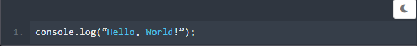

JavaScript adalah bahasa pemprograman tingkat tinggi yang pada
awalnya dikembangkan untuk membuat website menjadi lebih "hidup".
Bersama dengan HTML dan CSS, JavaScript menjadi bahasa pemprograman
paling populer untuk mengembangkan aplikasu berbasis web. Bahasa ini
mampu memberikan
logic ke dalam website, sehingga website tersebut memiliki
fungsionalitas tambahan dan lebih interaktir.
Awalnya JavaScript dibuat supaya dapat berjalan di lingkungan
browser dan membuat website menjadi lebih interaktif. Namun, saat
ini Anda sebagai developer dapat menggunakan bahasa pemprograman
JavaScript untuk mengembangkan berbagai macam platfrom. Sehingga,
tidak hanya sebatas browser/client, tetapi JavaScript juga bisa
berjalan di luar browser menggunakan Node.js
JavaScript termasuk kedalam kategori scripting language.
Apa itu maksudnya? Salah satu ciri-ciri utama dari bahasa
scripting adalah kode tidak perlu dikompolasi agar bisa
dijalankan. Scripting language menggunakan
interpreter untuk menerjemahkan kode atau perintah yang
kita tulis supaya dimengerti oleh mesin.
Itulah kenapa bahasa scripting tidak membutuhkan banyak kode yang
perlu ditulis agar program bisa dijalankan. Hanya dengan satu baris
kode berikut Anda bisa membuat program yang menampilkan teks "Hello,
World!" ke layar.

Sederhana, bukan? Itulah salah satu ciri utama JavaScript sebagai
scripting language. Tentu tidak lengkap rasanya ketika kita sudah
mengetahui apa itu JavaScript, tetapi tidak tahu sejarah dibaliknya.
Sejarah singkat dari JavaScript dapat Anda simak pada materi
berikutnya.
Sejarah JavaScript
JavaScript dibuat pada tahun 1995 oleh Brenda Eich,
programmer dari Netscape. Bahasa ini awalnya dinamai
"Mocha" kemudian berubah menjadi "LiveScript". Pada saat itu bahasa
Java merupakan bahasa pemprograman yang paling populer. Untuk
memanfaatkan kepopulerannya, nama LiveScript pun diubah menjadi
"JavaScript". Jadi, meskipun namanya mirip. JavaScript tidak ada
hubungannya dengan bahasa pemprograman Java
Setelah diadopsi di luar Netscape, JavaScript distandarisasi oleh
European Computer Manufacturers Association (ECMA). Sejak saat itu
JavaScript juga dikenal dengan ECMAScript. Meskipun begitu, masih
banyak yang menyebutnya dengan JavaScript hingga saat ini
Terdapat beberapa versi JavaScript yang sudah distandarisasi oleh
ECMAScript. Pada tahun 2000 hingga 2010, ECMAScript sedang
mendominasi. Selama waktu tersebut, ECMAScript 4 sedang dalam proses
pengembangan dengan harapan akan memberikan improvisasi yang cukup
signifikan. Namun, ambisi tersebut tidak berjalan mulus sehingga
pada tahun 2008 pengembangan ECMAScript dihentikan.
Walaupun begitu, ini bukan akhir dari JavaScript. Pengembangan
berganti menjadi ECMAScript 5 dengan mengurangi ambisinya dan hanya
melakukan perbaikan pada hal yang tidak jadi kontroversi. Pembaruan
tersebut berhasil dan akhirnya ECMAScript 5 dirilis pada tahun 2009.
Lalu oada tahun 2015 ECMAScript 6 dirilis dengan membawa perubahan
yang cukup besar termasuk ide-ide yang sudah direncanakan untuk
versi 4. Sejak saat itu, tiap tahun JavaScript melakukan update
bersifat minor.
Kenapa JavaScript
Jadi, kenapa kita perlu mempelajari JavaScript
Alasan utamanya karena JavaScript merupakan bahasa yang penting
untuk Anda kuasai jika ingin menjadi web developer, baik
itu front-end maupun back-end
Berikut ini adalah beberapa kelebihan dari JavaScript yang dapat
Anda pertimbangkan sebelum mulai mempelajari JavaScript
Bagaimana menurut Anda? Apakah setelah mengetahui beberapa kelebihan
dari JavaScript membuat Anda semakin semangat untuk mulai
mempelajarinya? Tunggu apalagi, yuk kita mulai belajar JavaScript!
Rangkuman Materi
Sebelum mempelajari sesuatu tentunya penting untuk mengetahui apa
yang akan kita pelajari sertan bagaimana sejarahnya dan bagaimana
perkembangannya.
Kita telah membahas beberapa hal di modul ini, antara lain: